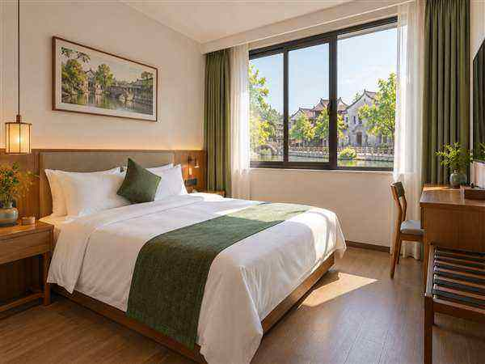

美食 · 参考
顺德特色美食
片区示意图，非商户实拍；非广告。
景区地址、电话、购票入口与周边食宿，一页查阅。信息以景区最新公告与官方平台为准。
地址、电话、开放与交通
导航使用高德地图；具体路线、停车与开放区域以实时导航和现场标识为准。
景区提供的入口，本站不代售
新版入口是微信小程序链接。复制后请到微信聊天窗口粘贴发送，再点击卡片进入。旧版入口可直接在浏览器打开。
#小程序://大众点评美食电影运动旅游门票/Y7iQxlHsZjYX1El
复制失败时，可手动选中上面这段文字。本站不代售、不收款；票价、开放时间、退改规则以官方平台为准。微信小程序链接需要在微信内打开。
吃住行参考，到店前核实
片区示意图，非商户实拍；非广告。

房型示意图，非商户实拍；非广告。
片区示意图，非商户实拍；非广告。